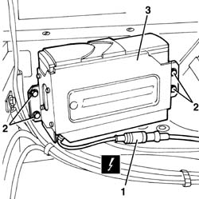
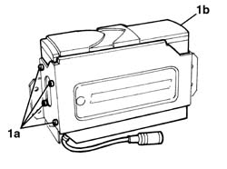

5570T85 cd/audio player loader - r r
- Path
- Procedures > 55 ELECTRICAL EQUIPMENT > 5570 ACCESSORIES > 5570T car radio and car telephone > 5570T85 cd/audio player loader - r r
- Kind
- repair procedure (removal / refitting; the operation number is the code)
- Applies to
- all engines; all production periods
- Interactive page
- https://sloeber94.github.io/elrnDB-a156/en/#/3238515
Applies to: all engines; all production periods; only with equipment: Sedan
 Removing
Removing
 Refitting
Refitting7040B10 load platform (luggage platform) trim - r+r
7040B22 luggage compartment/load platform moulding - r+r
7040B06 side trim (one) lh or rh, load compartment/load platform - r r
1. Disconnect the electrical connection for the CD player/changer.
 | Name | Connector |
|---|---|---|
1 | CD / multi-player |
2. Undo the nuts securing the player/changer.
3. Remove the player/changer and support.

Applies to: all engines; all production periods; only with equipment: Sedan
1. Working at the bench, undo the bolts (1a) on both sides and separate the player/changer (1b) from the support.

Applies to: all engines; all production periods; only with equipment: Sedan
Refitting
RemovingCheck that the player/changer is not damaged.
Position the player/changer on the support and tighten the bolts.
Position the player/changer on the support and secure it using the nuts.
Connect the electrical connection for the player/changer.
Check that the player/changer is working properly.
7040B06 side trim (one) lh or rh, load compartment/load platform - r r